Multiple Linear Regression
The Multiple Linear Regression command performs simple multiple regression using least squares. Linear regression attempts to model the linear relationship between variables by fitting a linear equation to observed data. One variable is considered to be a dependent variable (Response), and the others are considered to be independent variables (Predictors).
How To
Run: Statistics→Regression→Multiple Linear Regression...
Select Dependent (Response) variable and Independent variables (Predictors).
To force the regression line to pass through the origin use the Constant (Intercept) is Zero option from the Advanced Options.
Optionally, you can add following charts to the report:
o Residuals versus predicted values plot (use the Plot Residuals vs. Fitted option);
o Residuals versus order of observation plot (use the Plot Residuals vs. Order option);
o Independent variables versus the residuals (use the Plot Residuals vs. Predictors option).
For the univariate model, the chart for the predicted values versus the observed values (Line Fit Plot) can be added to the report.
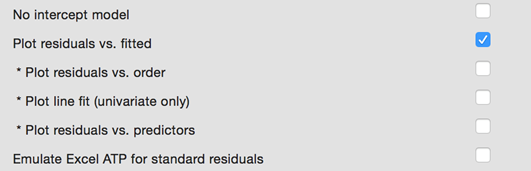
Use the Emulate Excel ATP for standard residuals option to get the same standard residuals as produced by Excel Analysis Toolpak.
Results
Regression statistics, analysis of variance table, coefficients table and residuals report are produced.
Regression Statistics
R2 (Coefficient of determination, R-squared)
is the square of the sample correlation coefficient between the Predictors (independent variables) and Response (dependent variable). In general, R2
is a percentage of response variable variation that is explained by its
relationship with one or more predictor variables.
In simple words, the R2 indicates the accuracy of the prediction. The
larger the R2 is, the more the total variation of Response is explained by predictors or factors in the
model. The definition of the R2 is
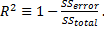
Adjusted R2 (Adjusted R-squared) is a modification of R2 that adjusts for the number of explanatory terms in a model. While R2 increases when extra explanatory variables are added to the model, the adjusted R2 increases only if the added term is a relevant one. It could be useful for comparing the models with different numbers of predictors. Adjusted R2 is computed using the formula:
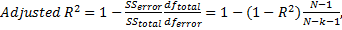
MSE – the mean square of the error, calculated by
dividing the sum of squares for the error term (residual) by the degrees
of freedom (,
 is
the number of terms).
is
the number of terms).
RMSE (root-mean-square error) – the estimated standard deviation of the error in the model. Calculated as the square root of the MSE.
PRESS – the squared sum of the PRESS residuals, defined in the Residuals and Regression Diagnostics.
PRESS RMSE is defined as . Provided for comparison with RMSE.
Predicted R-Squared is defined as . Negative values indicate that the PRESS is greater than the total SS and can suggest the PRESS inflated by outliers or model overfitting. Some apps truncate negative values to 0.
Total number of observations N - the number of observations used in the regression analysis.
The
regression equation takes
the form 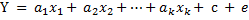 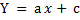 (or slopes), c is the constant or intercept,
and e
is the error term reflected in the residuals. Regression equation with no
interaction effects is often called main effects model.
(or slopes), c is the constant or intercept,
and e
is the error term reflected in the residuals. Regression equation with no
interaction effects is often called main effects model.
When there is a single explanatory variable the regression
equation takes the form of equation of the straight line:
Analysis of Variance Table
Source of Variation - the source of variation (term
in the model). The Total variance is
partitioned into the variance, which can be explained by the independent
variables (Regression), and the variance, which
is not explained by the independent variables (Error,
sometimes called Residual).
SS (Sum of Squares) - the sum of squares for
the term.
DF (Degrees of freedom) - the number of observations for
the corresponding model term. The total variance
has 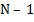
MS (Mean Square) - an estimate of the variation
accounted for by this term. 
F - the F-test statistic.
p-value - p-value for a F-test. A value less than level shows that the model estimated by the regression procedure is significant.
Coefficient Estimates
Coefficients - the values for the regression equation.
Standard Error - the standard errors associated with the coefficients.
LCL, UCL are the lower and upper confidence intervals for the coefficients, respectively. Default level can be changed in the Preferences.
t Stat - the t-statistics, used to test whether a given coefficient is significantly different from zero.
p-value - p-values for the alternative hypothesis (coefficient differs from 0). A low p-value (p < 0.05) allows the null hypothesis to be rejected and means that the variable significantly improves the fit of the model.
VIF – variance inflation factor, measures the inflation in the variances of the parameter estimates due to collinearities among the predictors. It is used to detect multicollinearity problems. The larger the value is, the stronger the linear relationship between the predictor and remaining predictors.
VIF equal to 1 indicates the absence of a linear relationship with other predictors (there is no multicollinearity). VIF value between 1 and 5 indicates moderate multicollinearity, and values greater than 5 suggest that a high degree of multicollinearity is present. It is a subject of debate whether there is a formal value for determining the presence of multicollinearity: in some situations even values greater than 10 can be safely ignored – when high values caused by complicated models with dummy variables or variables that are powers of other variables. In weaker models even values above 2 or 3 may be a cause for concern: for example, for ecological studies Zuur, et al. (2010) recommended a threshold of VIF=3.
TOL - the tolerance value for the parameter estimates, it is defined as TOL = 1 / VIF.
Residuals and Regression Diagnostics
Predicted values or fitted values are the values that the model predicts for each case using the regression equation.
Residuals are differences between the observed values and the corresponding predicted values. Residuals represent the variance that is not explained by the model. The better the fit of the model, the smaller the values of residuals. Residuals are computed using the formula:
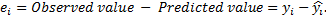
Both the sum and the mean of the residuals are equal to zero.
Standardized residuals are the residuals divided by the square root of the variance function. Standardized residual is a z-score (standard score) for the residual. Standardized residuals are also known as standard residuals, semistudentized residuals or Pearson residuals (ZRESID). Standardized and studentized residuals are useful for detection of outliers and influential points in regression. Standardized residuals are computed with the untenable assumption of equal variance for all residuals.
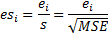
MSE is the mean squared-error of the model.
Studentized residuals are the internally studentized residuals (SRESID). The internally studentized residual is the residual divided by its standard deviation. The t‑score (Student’s t-statistic) is used for residuals normalization. The internally studentized residual is calculated as shown below ( is the leverage of the ith observation).
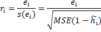
Deleted t – studentized deleted residuals or externally studentized residuals (SDRESID), are often considered to be more effective for detecting outlying observations than the internally studentized residuals or Pearson residuals. A rule of thumb is that observations with an absolute value larger than 3 are outliers (Hubert, 2004). Please note that some software packages report the studentized deleted residuals as simply “studentized residuals”.
Externally studentized residual (deleted t residual) is defined as the deleted residual divided by its estimated standard deviation.
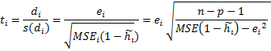
p is the number of terms (the number of regression parameters including the intercept).
The deleted residual is defined as , where is the predicted response for the ith observation based on the model with the ith observation excluded. The mean square error for the model with the ith observation excluded () is computed from the following equation:
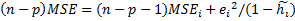
Leverage
is
a measure of how much influence each observation has on the model. Leverage of
the ith observation can be calculated as the ith diagonal
element of the hat matrix 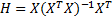 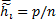
Stevens (2002) suggests to
carefully examine unusual observations with a leverage value greater
than 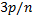
Cook's D – Cook's distance, is a measure of the joint (overall) influence of an observation being an outlier on the response and predictors. Cook’s distance expresses the changes in fitted values when an observation is excluded and combines the information of the leverage and the residual. Values greater than 1 are generally considered large (Cook and Weisberg, 1982) and the corresponding observations can be influential. It is calculated as:
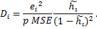
DFIT or DFFITS (abbr. difference in fits) – is another measure of the influence. It combines the information of the leverage and the studentized deleted residual (deleted t) of an observation. DFIT indicates the change of fitted value in terms of estimated standard errors when the observation is excluded. If the absolute value is greater than , the observation is considered as an influential outlier (Belsley, Kuh and Welsch, 1980).
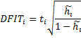
PRESS (predicted residual
error sum of squares) residual or prediction error is
simply a deleted residual defined above. The smaller the value
is, the better the predictive power of the model. The squared sum of the deleted
residuals (PRESS residuals) is known as the PRESS statistic: 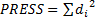
Plots
Unfortunately, even a high R2 value does not guarantee that the model fits the data well. The easiest way to check for problems that render a model inadequate is to conduct a visual examination.
Line Fit plot
A line fit plot is a scatter plot for the actual data points along with the fitted regression line.
Francis
Anscombe demonstrated the importance of graphing data (Anscombe, 1973). The Anscombe’s
Quartet is four sets of x-y variables [dataset: AnscombesQuartet] that have
nearly identical simple statistical properties and identical linear regression
equation 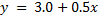
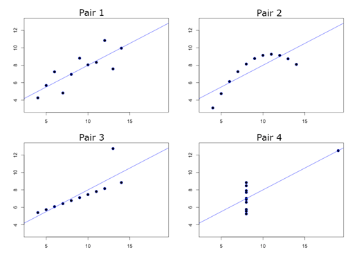
Residual plot
A residual plot is a scatter plot that shows the residuals on the vertical axis and the independent variable on the horizontal axis. It shows how well the linear equation explains the data – if the points are randomly placed above and below x-axis then a linear regression model is appropriate.
|
Linear model looks appropriate |
Nonlinear model would better |
|
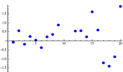
|
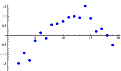
|
References
Anscombe, F. J. (1973). "Graphs in Statistical Analysis". American Statistician 27,17-21.
Belsley, David. A., Edwin. Kuh, and Roy. E. Welsch. 1980. Regression Diagnostics: Identifying Influential Data and Sources of Collinearity. New York: John Wiley and Sons.
Cook, R. Dennis and Weisberg, Sanford (1982). Residuals and Influence in Regression. Chapman and Hall, New York.
Huber, P. (2004). Robust Statistics. Hoboken, New Jersey: John Wiley & Sons.
Neter, J., Wasserman, W. and Kutner, M. H. (1996). Applied Linear Statistical Models, Irwin, Chicago.
Pedhazur, E. J. (1997). Multiple regression in behavioral research (3rd ed.). Orlando, FL: Harcourt Brace.
Stevens, J. P. (2002). Applied multivariate statistics for the social sciences (4th ed.). Mahwah, NJ: LEA.